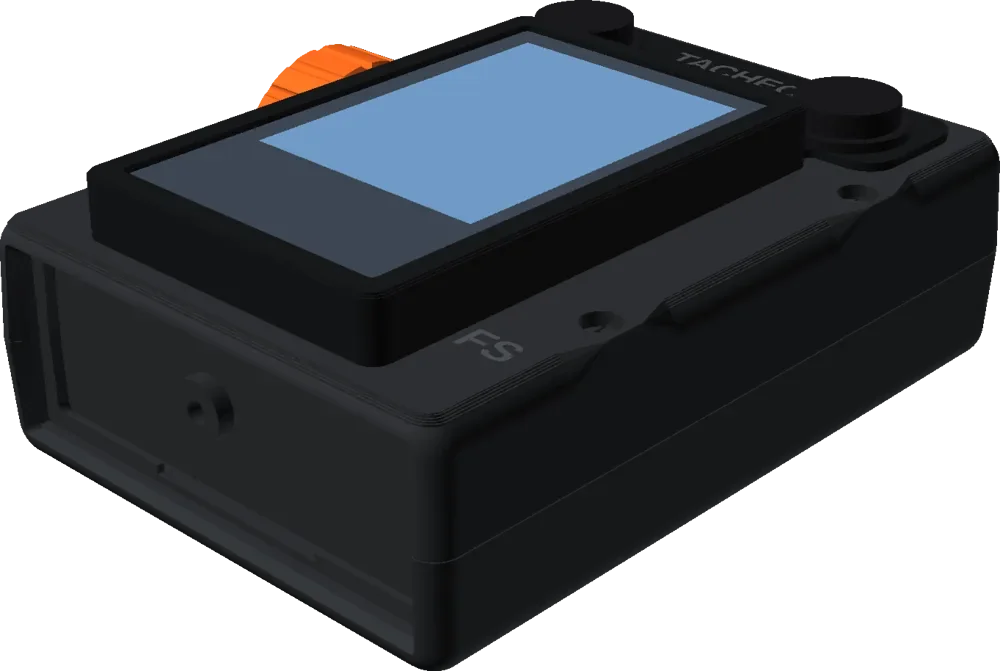
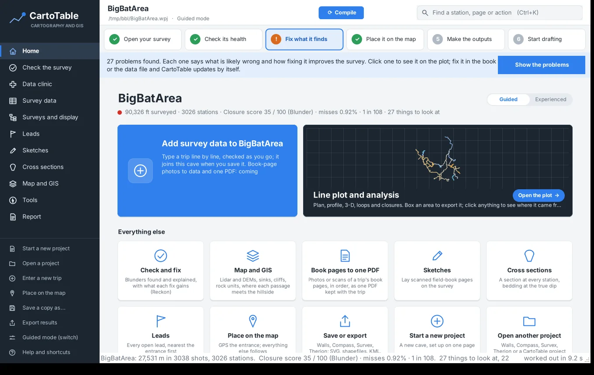
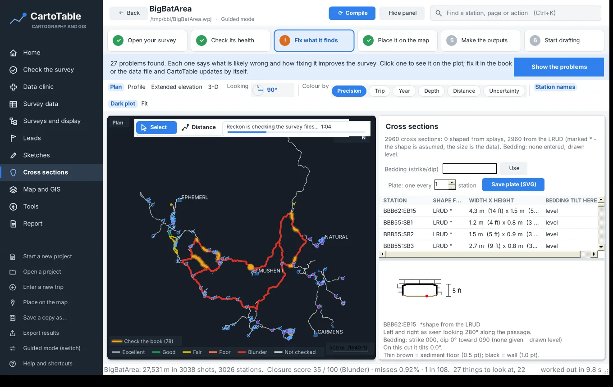
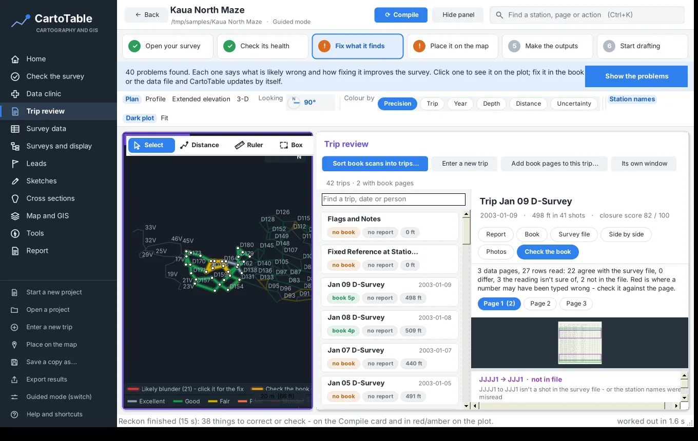
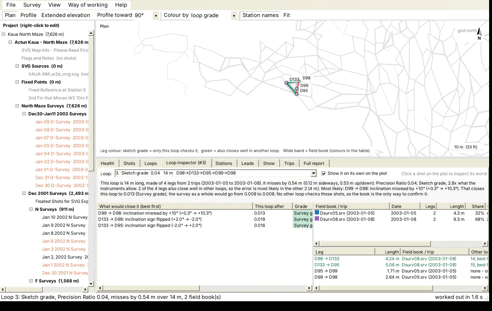

Cave survey instrument
Tacheo
The survey instrument that checks its own work.
Laser distance, compass and clinometer in one sealed handheld, with a 2-inch colour screen and firmware written around how a survey team actually works. No phone needed: it shows the numbers, you book them.

Tacheo
Laser, compass and clino in one sealed handheld that checks every Frontsight against its Backsight.
● Free · Windows & MacTacheo Topside
The companion program: firmware updates, shots by survey day, survey stats.
● Free · inside TopsideCartoTable
Cave survey data, cartography and GIS: from the field book to the finished map.
CrossTalk
Two instruments, one leg. They check each other.
Survey with two Tacheos and they link up over Bluetooth. Shoot the Frontsight from one station and the Backsight from the next, and the two units compare the pair before either number goes in the book.
Unit 1 · FS at A6
Unit 2 · BS at A7
Screens are design rendersWithin 1°: ★
One Tacheo on its own catches a Backsight1.3° off
Every shot
The backsight is on the screen before you need it.
- BACK box. Every shot shows its reciprocal bearing in big amber digits, so the number your partner is looking for is already worked out.
- Backsight detection. Shoot back within 8° of that reciprocal and Tacheo labels the shot, shows the error in degrees, and checks the distance against the Frontsight to 0.10 ft.
- FSx3. Three Frontsights within 2° of each other earn a confirming chime.
- LRUDs in one tap. Each is named Up, Down, Left or Right from the last leg, and flagged if it isn't square.
- Station names. Turn on Leg track and every shot is tagged A12–A13, backsights and splays included.
- Steady shots. Hold SHOT for 3 seconds (1.5 to 5, your choice). It beeps when the reading is in and asks for a re-shoot if the unit moved.
- Loops that close. Come back to a station and Tacheo checks the loop. Off by more than 1 ft, it names the leg most likely to be wrong.
- Warnings that matter. Legs over your limit (50 ft unless you change it) get boxed with an extra beep. Steep shots are marked; past 88° it reads VERT.
Calibration & health
It tells you when it's drifting.
A survey instrument is only as good as its last calibration. Tacheo keeps score of its own, every time you switch it on.
- Two depths. Normal: 24 holds, about 6 minutes. Precision: 48, about 12. Compass and clino on their own or together. Press, let go, and a 3-second timer takes the hold, so shaky hands don't count.
- Laser set once. Aim and distance are calibrated on the bench before the unit ships, behind a factory menu that field calibrations never touch.
- Every shot knows its calibration. Each one carries its calibration's ID, and a very good calibration earns an EXCELLENT rating.
- A health check at every start. Your average Frontsight-to-Backsight error over the last 20 pairs, and a warning that names any sensor that has drifted.
- Check and Quick fix. Confirm a calibration in the cave, or fix a compass offset in 8 holds.
Built for the cave
Sealed, sand-proof, and ready for the mud.
- Case
- Printed PETG in charcoal, with a black screen deck. Pocket-sized
- Screen
- 2.0″ IPS colour, 320 × 240, under its own window. Auto-dim between shots; the backlight goes dark for every compass reading
- Compass
- PNI RM3100 magnetometer
- Clino
- ST LSM6DSV16X accelerometer
- Distance
- Laser rangefinder with a visible red dot
- Sealing
- Polycarbonate windows, silicone-sealed seams, USB-C under an O-ring screw cap
- Buttons
- SHOT and MENU, under silicone covers that keep cave sand out
- Power
- Plug-in LiPo cells charged over USB-C: 1000 mAh, or 2000 mAh with Extended Range. Battery percentage on every screen
- Memory
- The newest 10,000–20,000 shots, each with its calibration ID
- Bluetooth
- CrossTalk between Tacheos, and shots sent to survey apps such as SexyTopo
- Yours
- Its own serial number, your name on the start-up screen, and an FS or BS mark on the lid


Tacheo Topside · free
The companion program on your computer.
Plug a Tacheo into a Windows PC or a Mac with any USB-C data cable. Topside keeps the instrument up to date, turns its memory into something you can use, and opens CartoTable for the drafting.

Updates in one click
New firmware installs from inside Topside, and Topside updates itself. No downloads to hunt for, no files to copy.
Shots by survey day
Every shot grouped by trip, with CSV and Survex export.
Survey performance
Your survey speed and Frontsight/Backsight stats, trip by trip.
Reads other instruments
DistoX2, Disto XBLE, Cavway X1 and BRIC, alongside your Tacheo.
CartoTable
Cartography and GIS for the whole cave, one click from the welcome screen. Reckon's blunder finder now lives inside it.
CartoTable · free, inside Topside
From the field book to the finished map.
Cave survey data, cartography and GIS in one program. Open a Walls, Compass, Survex or Therion project and CartoTable checks it, tells you in plain words what's wrong and what fixing it gains, and takes you through to plates, cross sections and the cave on the ground.
Built because the software has been the hardest part of becoming a cave cartographer. No drop-down menus: every page is named on the left, every action is a button where you need it, and Ctrl+K finds anything by typing. Pick Guided for a step bar that says what to do next, or Experienced for the statistics.


It finds the blunders, and shows you the fix first.
Compile (F5) adjusts the whole survey and grades every loop as a plain "misses by 1 ft in every N", from Excellent to Blunder. Likely blunders are drawn red, legs to check in the book amber. For each one, Try it shows what the survey would look like with the corrected reading; Apply changes the survey file after you confirm, keeps the old one, and can be undone.

It reads the book page. You check it.
Photograph the book's data page and CartoTable reads the numbers into the grid, marking in amber any it isn't sure of or that fail a check. Or type it line by line with the page on screen. Every line is checked against the whole cave as you finish it: front and back sights that disagree, backsights booked the wrong way round, repeats, tie-ins. Save it and CartoTable writes a complete Walls file and adds it to the project.

A cross section at every station.
Square to the passage, shaped from splays where they were shot and from the LRUDs where they weren't, with the bedding tilted to its apparent dip on each section. Saved as a plate SVG, ready for drafting.

The cave on the ground.
Load a lidar or elevation model and get hillshade, local relief, sky view and contours. The sinkhole finder ranks every hollow by how it relates to the passage and the open leads. See where each passage's level meets the hillside, lay in rock units, and find passage ends that come close to other passage through the rock.

Book pages, sorted and checked.
Drop in a folder of phone photos of the book. CartoTable sorts them into trips, makes one PDF per trip, and puts the book beside the survey file so you can check one against the other. Scanned sketches are laid under the plan from the stations you mark on them.

One bad loop, taken apart.
The Loop inspector shows a loop on its own, banded by field book, and ranks what would close it: a single misread number, or a whole trip's compass, clino or tape off by a constant. When nothing explains it, it says which legs to re-shoot.
Opens Walls · Compass · Survex · Therion Writes all four, plus plan, profile and extended-elevation SVG · cross-section plates · 3-D model · shapefiles · GeoJSON · KML · GPX · CSV · a printed map sheet (PNG, PDF) · the survey report
Tacheo 2 · first run
25 units, built and calibrated by hand.
Every unit is assembled, calibrated and checked by me before it ships, so you get an instrument that's already been through its first calibration.
| Extended RangeTwo extra cells, 1000 → 2000 mAh, about twice the run time | +$30 |
| Impact CaseHard carry case with a Tacheo-labelled insert and rubber impact lining | +$30 |
| Custom nameYour name or club lettered on the unit and the case insert | +$20 |
One-year warranty against defects in materials and workmanship in normal cave survey use, with free laser re-calibration.
Reserve one
Reservations are open for the first run. No money changes hands until production is confirmed: I email you when production starts, and again when your units are ready to pay for.
Development log
Built in the open, tested underground.
- Oct 2026First Tacheos built and in the hands of beta testers. Two-unit Frontsight/Backsight checking running in beta firmware.
- 15 Oct 2026The two-unit mode named CrossTalk, with FS/BS roles on the ready screen and ✓ / ★ agreement marks.
- 22 Oct 2026Reservations opened to the public for the first run.
- Nov 2026Tacheo 2 design settled: 2-inch colour screen, printed case, plug-in cells. Main board ready to order.
- 13 Nov 2026CartoTable named: the cartography and GIS program, with Reckon's blunder finder folded in. It opens from Topside's welcome screen.
- 14 Nov 2026Topside 1.6.77: CartoTable compiles a typed trip as soon as it's saved, and Home gets one tile per job.
Questions
Before you ask.
Do I need a phone?
No. Tacheo shows every number on its own screen and you book them in your notebook. Bluetooth to a survey app is there if you want it.
Does one Tacheo do anything on its own?
Yes. The BACK box, Backsight detection, FSx3, loop checks and the tools all work with a single unit. CrossTalk needs two.
How accurate is it?
Measured figures will be published once production units have been through testing. Each unit's calibration is checked before it ships.
Is it waterproof?
It's sealed against mud, drips and sand, with the USB-C port under an O-ring cap. It isn't rated for submersion.
Will it work with my other instrument?
A Tacheo can listen to a BRIC4/5, Cavway X1 or Disto XBLE and check that instrument's shots against its own, and Topside reads their data too.
Do I need a Tacheo to use Topside or CartoTable?
No. Both are free. CartoTable opens any Walls, Compass, Survex or Therion project, and Topside reads DistoX2, Disto XBLE, Cavway X1 and BRIC instruments too.
Does CartoTable run on a Mac?
Not yet. CartoTable runs on Windows. Topside for Mac is in beta, and its CartoTable card opens Reckon, the blunder finder, for now.
Windows says the download is a threat.
Topside is new and not yet code-signed, and Microsoft Defender's automatic checks sometimes flag new programs from small makers. The download page says what's going on and what to do.
How do I ask something?
Message me from the download page; it comes straight to my inbox. Reservations go through the form above.
Who builds it?
Phillip Sullivan ("Sully"), a caver, cave surveyor and cave cartographer. Every unit is assembled, calibrated and checked by hand.